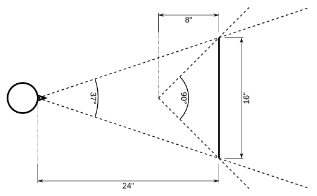

Immersive display systems, on the other hand, do not simulate cameras, but how (human) observers see the real world. As opposed to regular 3D graphics, which presents virtual photographs to users, immersive displays treat the display as a portal into a virtual world. To create convincing, distortion-free displays, the degrees of freedom available for virtual cameras must be tied to physical constraints. As an example, consider a typical desktop setup with a user sitting about two feet away from a 20" flat-panel monitor (see Figure 1). This results in an actual field-of-view of about 37°; much smaller than those typically used by virtual cameras in regular 3D graphics. In those cases, the image on the screen will appear distorted: spheres close to the display's edges, for example, will appear as ellipsoids. This distortion is particularly obvious when rotating around the viewpoint, and can even lead to motion sickness. To properly match the wide fields-of-view (upwards of 90°) configured in standard 3D graphics applications, users would have to move very close to their monitors. This, by the way, is the fundamental reason why immersive virtual reality environments typically use very large screens (CAVEs), or small screens very close to the viewer's eyes (HMDs): those are the only ways to create wide fields-of-view without distortion.
|  |
| Figure 1: Plan view of typical desktop system, where a user (left) is sitting 24" away from a 4:3 20" flat-panel monitor (right). The user's actual field-of-view is much smaller than the 90° typically used in regular 3D graphics applications, such as games. To achieve a 90° field-of-view, the user would have to sit only 8" away from the 20" screen. |
According to this model, Vrui treats every environment, even desktops, as immersive environments defined by a collection of screens and viewers. A desktop system typically has one fixed viewer and one fixed screen; a CAVE-like system has several fixed screens and a single head-tracked viewer; and an HMD-based system has a head-tracked viewer with two small screens at fixed positions relative to the viewer.
The benefits of this environment model are that, if both viewer positions and screen positions/sizes are configured properly, 3D graphics will always be displayed without distortion, and in environments with multiple screens, the images from all screens will always match seamlessly. The model has an additional benefit for stereoscopic rendering. If the viewer's left and right eye positions are configured correctly, 3D objects will appear at their proper positions and sizes in 3D space, without distortion. Eye position-based stereo automatically uses skewed view frusta, and does not suffer from the distortions induced by the commonly used "toe-in" method. It is still possible to create larger-than-physical fields-of-view by intentionally misconfiguring the viewer position, i.e., placing the viewer closer to the screen than in reality. However, this cannot be done by graphics applications themselves, but only on the user's initiative.
An important per-window configuration option is each window's mode, defining if, and how, windows create stereoscopic displays. The simplest windows are monoscopic, i.e., they only display the view from a single eye, just like windows in regular 3D graphics applications. Since Vrui is meant to create immersive displays, however, most of its windows are expected to be used in one of several stereoscopic modes. Vrui windows support many different ways to create stereoscopic displays, from simple anaglyphic stereo (using red/blue glasses) to active stereo (used in high-end environments such as CAVEs) or even glasses-free autostereo.
Since it is aimed at immersive displays, Vrui, by default, assumes that all windows are full screen, i.e., that they have no frames or decorations, and that their (physical) sizes are identical to the sizes of their display screens. This generally does not hold true in desktop environments, where users want to be able to see multiple windows at the same time, and move windows around any time. Vrui windows can be configured to behave "properly" in such circumstances, in which case they behave almost exactly like the windows of regular 3D graphics applications. One subtle difference is that Vrui windows will still use viewer-and-screen defined cameras; as a result, the 3D perspectives of windows change slightly as they are moved around. The benefit of this is that windows contents are always displayed distortion-free, no matter how windows are resized or moved.
Desktop environments typically do not provide 6-DOF input devices natively; instead, users will have a keyboard (a collection of around 100 on/off switches) and a mouse (a collection of two analog axes -- the mouse's horizontal and vertical positions -- and several on/off switches and an analog mouse wheel, depending on model). In desktop environments, Vrui treats keyboard and mouse as a single integrated 6-DOF device, one with a very large number of buttons. To simulate how mice are used in regular 3D graphics applications, Vrui will position the "3D" mouse directly at the viewer's eyes (technically, at the frontplane), and orient it such that it points into 3D space through the position of the (2D) mouse cursor on the screen. Vrui then provides several means to map the mouse from its "raw" position to more convenient positions for interaction. These means can be selected dynamically by the user during a Vrui application's runtime, and can be changed depending on the concrete task at hand.
Some desktop environment have additional pseudo-3D input devices such as joysticks and spaceballs; Vrui handles these similarly, by providing user-selectable means to convert them into 6-DOF input devices as needed. Such pseudo-3D devices can provide a smooth "upgrade path" between standard desktop environments and fully immersive environments.
This fundamental 3D space, which has a close relationship to the real, physical world, is called physical space. To set up a Vrui environment, one starts by picking an arbitrary right-handed coordinate system for physical space, with an arbitrary unit of measurement. For example, one might choose to place physical space's origin in the center of one's environment, with the x axis pointing to the right, the z axis pointing up, and the y axis -- prescribed by the system's right-handedness -- pointing towards the interior of the environment. One might then choose to measure physical positions in meters, or in inches, or in centimeters, depending on local customs.
Vrui does not care at all about the definition of physical space, as long as it is right-handed, and used consistently. This means that all (physical) Vrui components: screens, viewers, and input devices, must be configured using the same physical space. If this is done carefully, the resulting environment's 3D display will automatically be distortion-free and seamless.
In true immersive environments, the dynamic positions and orientations of viewers and input devices are provided by separate 3D tracking systems. These tracking systems typically report those positions and orientations in their own coordinate systems, which are usually configured during a tracking system-specific calibration process. To integrate tracking systems into Vrui environments, one has to configure a transformation from tracking system space into Vrui physical space, which often requires an additional calibration step. An alternative is to simply use the tracking system's coordinate system (assuming that it is right-handed) as Vrui's physical space, and then measure the positions, orientations, and sizes of Vrui's viewers and screens in that coordinate system.
After all components of an environment have been measured and configured, Vrui needs to be informed about several properties of physical space that assist applications in presenting virtual 3D worlds properly. For example, Vrui needs to know which direction in physical space is "up," such that applications can present virtual 3D objects in the correct orientation. Similarly, Vrui needs to know which unit of measurement is used in physical space, such that virtual 3D objects can be presented true to scale. Vrui also needs to know a "forward direction" that points into the environment, and a "floor plane equation" defining the environment's physical floor. These two together are used by some navigation tools to allow users to walk on virtual surfaces. Finally, Vrui should be given a "display center point" and a "display radius" that together define a sphere that roughly covers the user-accessible interior of the VR environment. This sphere is used by Vrui applications as a guide where to place virtual 3D objects upon startup, so that the user never faces an apparently empty environment.